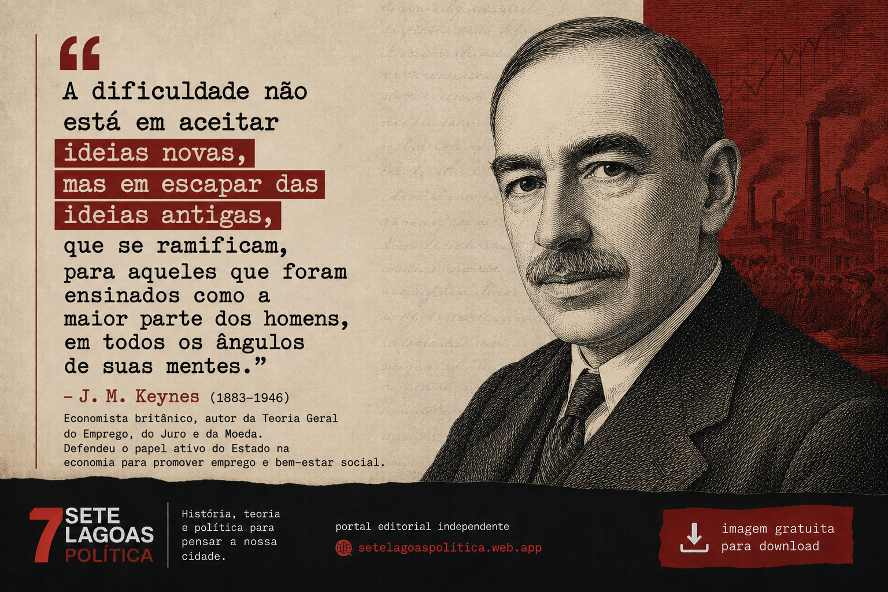
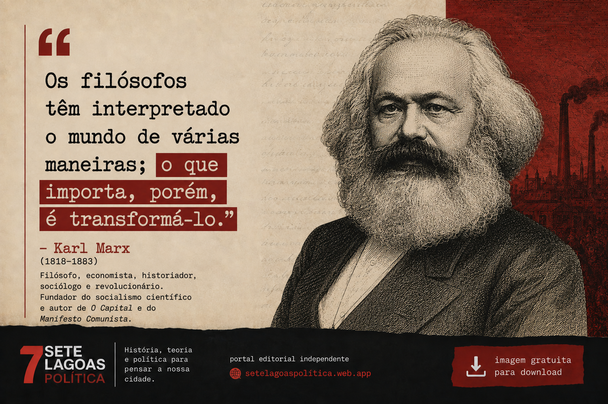
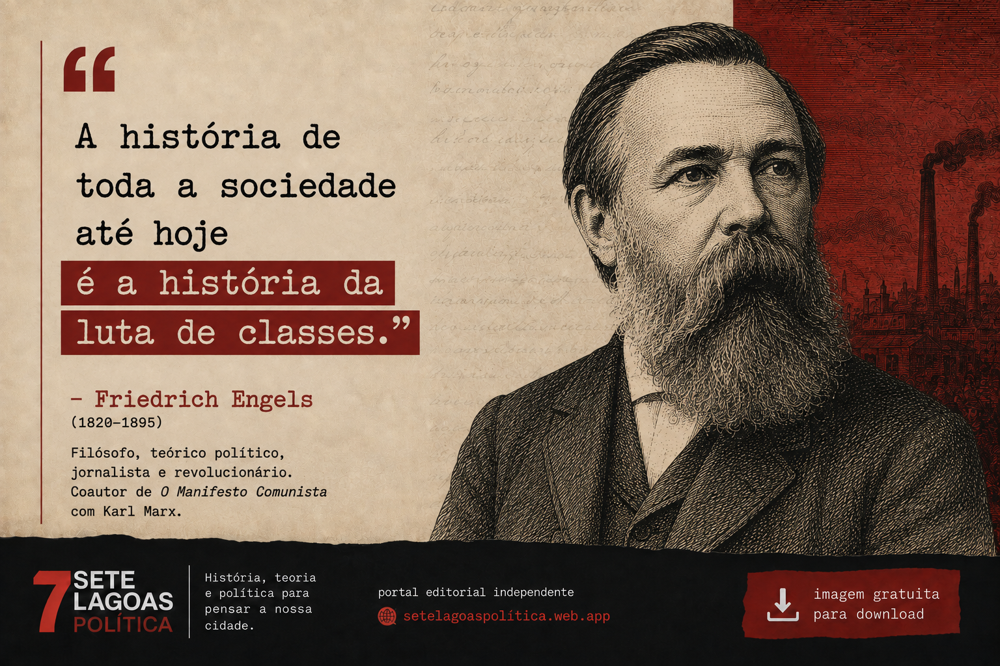
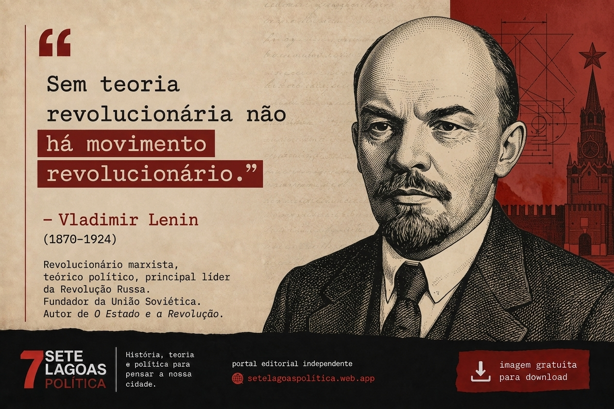
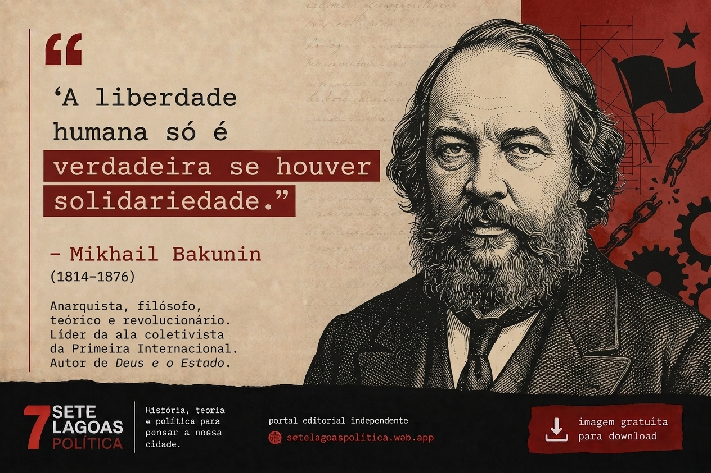
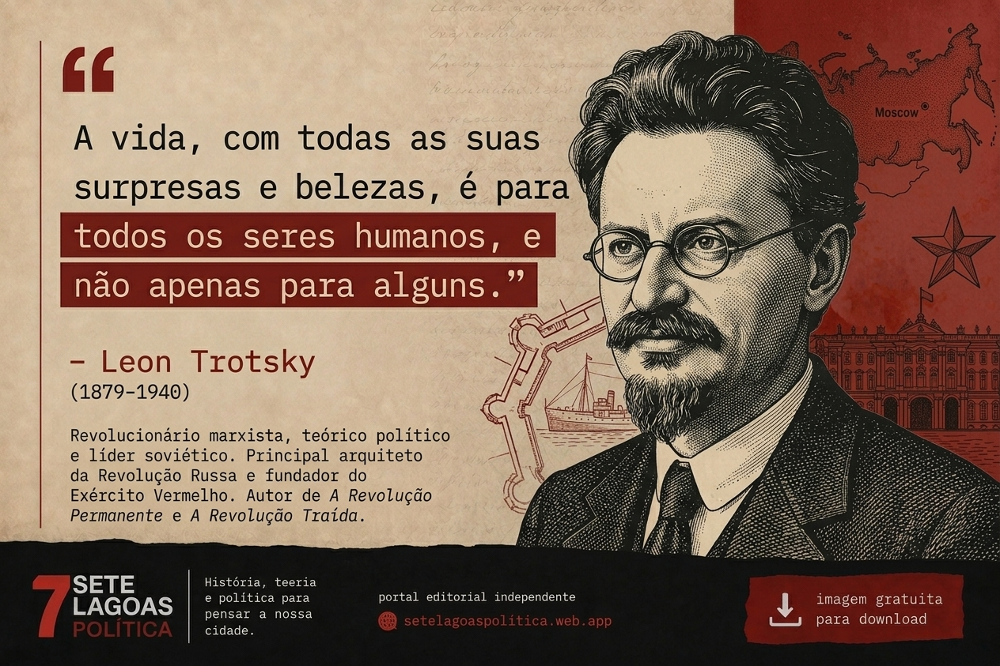

Thomas Hobbes
Filósofo inglês e pensador político fundamental. Autor de "Leviatã" e conceitos-chave sobre o contrato social.
↓ Baixar ImagemExplore nossa galeria de imagens. Baixe livremente para projetos educacionais, políticos, apresentações e toda a sua criatividade.
Acesso livre a imagens para uso em estudos, apresentações, redes sociais e projetos educacionais.
Filósofo inglês e pensador político fundamental. Autor de "Leviatã" e conceitos-chave sobre o contrato social.
↓ Baixar ImagemPensador utópico francês e precursor do socialismo. Influenciou o pensamento econômico e social moderno.
↓ Baixar ImagemRevolucionária, teórica marxista e uma das principais referências do socialismo europeu. Defendeu a organização dos trabalhadores, a democracia e a emancipação social.
↓ Baixar Imagem
Economista britânico e um dos principais pensadores da economia moderna. Defendeu a atuação do Estado na economia, políticas de emprego e investimento público para promover estabilidade e bem-estar social.
↓ Baixar Imagem
Filósofo, economista, historiador e revolucionário alemão. Desenvolveu uma crítica profunda ao capitalismo e foi um dos principais formuladores do socialismo científico e da teoria da luta de classes.
↓ Baixar Imagem
Filósofo, teórico político, jornalista e revolucionário alemão. Parceiro intelectual de Karl Marx, contribuiu para o desenvolvimento do socialismo científico e para a análise das condições da classe trabalhadora durante a Revolução Industrial.
↓ Baixar Imagem
Revolucionário russo, ideólogo comunista e fundador da União Soviética. Desenvolveu a teoria do socialismo em um único país e foi líder da Revolução Bolchevique de 1917, marcando o século XX.
↓ Baixar ImagemFilósofo político italiano renascentista. Autor de "O Príncipe", obra essencial sobre poder político, estratégia e a natureza da política realista. Fundador do pensamento político moderno.
↓ Baixar Imagem
Estadista e político soviético. Último secretário-geral da União Soviética. Implementou políticas de abertura (glasnost) e reforma (perestroika) que transformaram a política mundial e levaram ao fim da Guerra Fria.
↓ Baixar ImagemMilitar e revolucionário burquinês. Presidente do Burquina Faso de 1983 a 1987. Símbolo da luta contra o imperialismo, pela educação, igualdade de gênero e desenvolvimento africano independente.
↓ Baixar Imagem
Revolucionário russo, teórico marxista e organizador do Exército Vermelho. Desenvolveu a teoria da revolução permanente e foi uma figura central nas discussões sobre socialismo, imperialismo e estratégia revolucionária.
↓ Baixar ImagemSim! Todas as imagens do nosso acervo são livres para uso educacional, cultural, político e comercial.
Não é obrigatório, mas agradecemos mencionar "Sete Lagoas Política" quando possível. Assim ajuda outros a conhecer nosso trabalho.
Absolutamente! Queremos que as imagens sejam compartilhadas, remixadas e usadas em toda a comunidade.
Não. Todas as imagens são fornecidas sem marca d'água, prontas para uso imediato.
{kind=link}
{kind=link}
{kind=link}
{kind=link}
{kind=link}
{kind=link}
{kind=link}
{kind=link}
{kind=link}
{kind=link}
{kind=link}